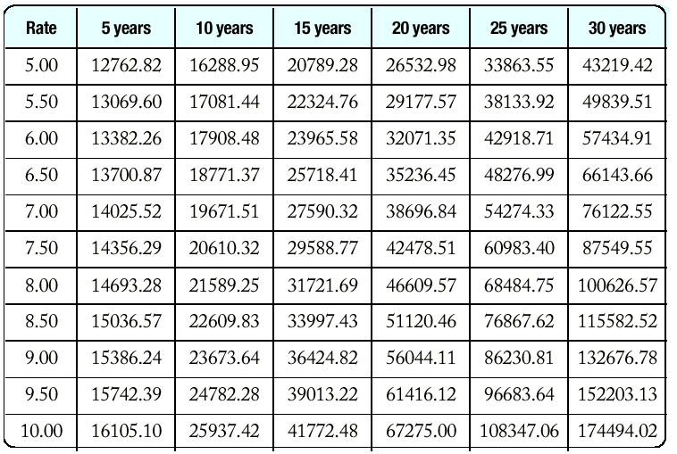

Пример: Да се намери стойността (в долари) на купчина американски монети (1 penny = 1 цент, 1 nickel = 5 цента, 1 dime = 10 цента, 1 quarter = 25 цента). Купчината съдържа еднакви монети.

План:
Програмиране на алтернативи
Вложени условни оператори
Булеви операции
Отложени пресмятания
Закони на де Морган
Оператор за цикъл for
Оператор за цикъл do/while
Вложени цикли
** Програмиране на алтернативи (избор на един от няколко
варианта).
Пример: Да се намери стойността (в долари) на
купчина американски
монети (1 penny = 1 цент, 1 nickel = 5 цента, 1 dime = 10
цента, 1 quarter = 25 цента). Купчината съдържа еднакви монети.
// coins5.cpp
#include <iostream> #include <string> using namespace std; int main() { cout << "Enter coin name: "; string name; cin >> name; double value = 0; if (name == "penny") value = 0.01; else if (name == "nickel") value = 0.05; else if (name == "dime") value = 0.10; else if (name == "quarter") value = 0.25; else cout << name << " is not a valid coin name\n";
cout << "Value = " << value << "\n"; return 0В тази задача редът на алтернативите не е важен.
// richter.cpp
#include <iostream> #include <string> using namespace std; int main() { cout << "Enter a magnitude on the Richter scale: "; double richter; cin >> richter; if (richter >= 8.0) cout << "Most structures fall\n"; else if (richter >= 7.0) cout << "Many buildings destroyed\n"; else if (richter >= 6.0) cout << "Many buildings considerably damaged, " << "some collapse\n"; else if (richter >= 4.5) cout << "Damage to poorly constructed buildings\n"; else if (richter >= 3.5) cout << "Felt by many people, no destruction\n"; else if (richter >= 0) cout << "Generally not felt by people\n"; else cout << "Negative numbers are not valid\n"; return 0; }
| Ако облагаемата сума е над | но не повече от | данъкът е | върху сумата над |
| 0 | 21400 | 15% | 0 |
| 21450 | 51900 | 3217.50 + 28% | 21450 |
| 51900 | - | 11743.50 + 31% | 51900 |
| Ако облагаемата сума е над | но не повече от | данъкът е | върху сумата над |
| 0 | 35800 | 15% | 0 |
| 35800 | 86500 | 5370.00 + 28% | 35800 |
| 86500 | - | 19566.00 + 31% | 86500 |

// tax.cpp
#include <iostream>
#include <string>
using namespace std;
int main()
{ const double SINGLE_LEVEL1 = 21450.00;
const double SINGLE_LEVEL2 = 51900.00;
const double SINGLE_TAX1 = 3217.50;
const double SINGLE_TAX2 = 11743.50;
const double MARRIED_LEVEL1 = 35800.00;
const double MARRIED_LEVEL2 = 86500.00;
const double MARRIED_TAX1 = 5370.00;
const double MARRIED_TAX2 = 19566.00;
const double RATE1 = 0.15;
const double RATE2 = 0.28;
const double RATE3 = 0.31;
double income;
cout << "Please enter your income: ";
cin >> income;
cout << "Please enter s for single, m for married: ";
string marital_status;
cin >> marital_status;
double tax;
if (marital_status == "s")
{ if (income <= SINGLE_LEVEL1)
tax = RATE1 * income;
else if (income <= SINGLE_LEVEL2)
tax = SINGLE_TAX1 + RATE2*(income - SINGLE_LEVEL1);
else
tax = SINGLE_TAX2 + RATE3*(income - SINGLE_LEVEL2);
}
else
{ if (income <= MARRIED_LEVEL1)
tax = RATE1 * income;
else if (income <= MARRIED_LEVEL2)
tax = MARRIED_TAX1 + RATE2*(income - MARRIED_LEVEL1);
else
tax = MARRIED_TAX2 + RATE3*(income - MARRIED_LEVEL2);
}
cout << "The tax is $" << tax << "\n";
return 0;
}
| истина | да | true | 1 | изпълнено | вярно | удовлетворено |
| лъжа | не | false | 0 | нарушено | невярно | неудовлетворено |
if (now.get_hours() == homework.get_hours() &&Операция дизюнкция (или) има стойност истина, ако и поне един от двата аргумента е истина.
now.get_minutes() == homework.get_minutes())
cout << "The homework is due right now!\n";
if (state == "HI" || state == "AK")Основни логически операции:
shipping_charge = 10.00;
| и | конюнкция | and | && | бинарна операция |
| или | дизюнкция | or | || | бинарна операция |
| не | отрицание | not | ! | унарна операция |
Таблици за стойностите на логическите операции:
|
|
|
||||||||||||||||||||||||
| |
|
|
** Отложени пресмятания (lazy evaluations)
Затова и двата случая не се проверява стойността на втория
аргумент - нарича се отложено пресмятане.
Пример. Приложение на отложени пресмятания - ако има
грешка на входа, стойността на area
е неопределена и няма смисъл да се проверява дали е положителна.
cin >> area;При проверката и грешка във входния поток (първият аргумент на операция or е true) не се проверява условието area < 0.
if (cin.fail() || area < 0) cout << "Input error.\n";
if (!(country == "USA" && state != "AK" && state != "HI"))Законите на DeMorgan може да се използват за да се опростят тези булеви изрази.
shipping_charge = 20.00;
|
not (A and B)
|
е също като
|
not A or not B
|
|
not (A or B)
|
е също като
|
not A and not B
|
state != "AK" && state != "HI" |
като
|
!(state == "AK") && !(state == "HI") |
!(state == "AK") && !(state == "HI") |
DeMorgan
|
!(state == "AK" || state == "HI") |
!(country == "USA" && |
DeMorgan |
!(country == "USA") || |
country != "USA" || state == "AK" || state == "HI"с приложение на отложени пресмятания.
i = start;За тази форма има специален оператор за цикъл:
while (i <= end)
{ . . .
i++;
}
for (i = start; i <= end; i++)Пример: Пресмятане на функцията факториел: n! = 1.2.3.4...n
// forfac.cppЦикъл с намаляване на променливата на цикъла.
#include <iostream>
using namespace std;
long forfac(int n)
{ long product = 1;
for (int i = 1; i <= n; i++) product = product * i;
return product;
}
int main()
{ cout << "Please enter a number: ";
int n;
cin >> n;
cout << n << "! = " << forfac(n) << "\n";
return 0;
}
for (int n = 10; n >= 0; n--) ...Нарастването или намаляването на стъпката на цикъла може да не е 1.
for (x = -10; x <= 10; x = x + 0.5) ...Възможно е да се сложат несвързани условия в цикъла.
for (rate = 6; month--; cout << balance) ... // BADБезкраен цикъл.
for (;;) ...
while(true) ..
doПример: Древните гърци са използвали прост алгоритъм за пресмятане на корен квадратен.
{ statements
}
while (condition);
do
{ xold = xnew;
xnew = (xold + a / xold) / 2;
}
while (fabs(xnew - xold) > EPSILON);// sqroot.cpp
#include <iostream> #include <cmath> using namespace std; int main() { cout << "Please enter a number: "; double a; cin >> a; const double EPSILON = 1E-14; double xnew = a; double xold; do { xold = xnew; xnew = (xold + a / xold) / 2; } while (fabs(xnew - xold) > EPSILON); cout << "The square root is " << xnew << "\n"; return 0; }
Таблицата показва съдбата на 10 хиляди щатски долара, инвестирани с различни лихвени проценти за различен брой години.
print table headerХедърът на таблицата също се получава е един цикъл:
double rate;
for (rate = RATE_MIN; rate <= RATE_MAX;
rate = rate + RATE_INCR)
{ print table row
}
cout << "Rate ";За отпечатване на един ред се използва още един цикъл - така получаваме вложен цикъл.
int year;
for (year = YEAR_MIN; year <= YEAR_MAX;
year = year + YEAR_INCR)
{
cout << setw(2) << year << " years";
}
// table.cpp
#include <iostream> #include <iomanip> #include <cmath>
using namespace std;
int main()
{ const double RATE_MIN = 5;
const double RATE_MAX = 10;
const double RATE_INCR = 0.5;
const int YEAR_MIN = 5;
const int YEAR_MAX = 30;
const int YEAR_INCR = 5;
/* print table header */
cout << " Rate ";
int year;
for (year = YEAR_MIN; year <= YEAR_MAX;
year = year + YEAR_INCR)
cout << setw(2) << year << " years ";
cout << "\n";
cout << fixed << setprecision(2);
double rate;
double initial_balance = 10000;
for (rate = RATE_MIN; rate <= RATE_MAX;
rate = rate + RATE_INCR)
{
/* print table row */
int year;
cout << setw(5) << rate;
for (year = YEAR_MIN; year <= YEAR_MAX;
year = year + YEAR_INCR)
{ double balance =
initial_balance * pow(1 + rate/100, year);
cout << setw(10) << balance;
}
cout << "\n";
}
return 0;
}
В някои случаи броят на итерациите (изпълнения на тялото на цикъла)
на вътрешния цикъл зависи от броячът на итерациите на външния цикъл.